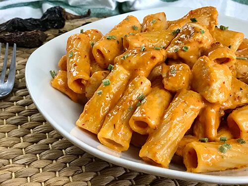

Macarrones

Descripcion
El chile chipotle es un tipo de chile mexicano que se deja madurar por un tiempo para luego ahumarlo y aliñarlo, obteniendo así un producto de color marrón rojizo con un sabor bastante picante y muy peculiar, es muy utilizado para elaborar diferentes tipos de recetas como guisos, salsas, entre otros. Hoy vamos a elaborar unos deliciosos Macarrones con pollo y salsa chipotle, otra manera diferente para elaborar macarrones, además si eres de los que les gusta las comidas picante, entonces no puedes dejar de preparar esta receta.
Y si te gustan las recetas mexicanas, no puedes perderte estos tacos al pastor o los tacos de cerdo chipotle, sabores auténticos que agradarán ta u paladar!! también puedes elegir estas ricas flautas de pollo mexicanas o estas deliciosas quesadillas de carne y queso!! sabores mexicanos que a todos encantan!! y si nos paseamos por sus ensaladas, el pico de gallo mexicano es el rey de los reyes!! y si nos vamos hacia los aperitivos, estos estupendos nachos con salsa de queso o este riquísimo chili con carne y queso, son uno de los más preparados en esta cocina!!
Ingredientes
- 400 g. de macarrones cocidos
- 200 ml. de nata para cocinar
- 100 ml. de crema agria
- 3 chiles chipotle en adobo
- 1 diente de ajo
- 1 pechuga de pollo cortada en cubos
- 40 g. de mantequilla
Pasos
- Comenzamos la elaboración de nuestros macarrones de pollo y salsa chipotle, para ello colocamos el pollo en un recipiente y le agregamos la sal, el ajo en polvo, la cebolla en polvo, la pimienta y mezclamos. (reservamos)
- En el vaso de la batidora vamos a agregar la nata, la crema agria, el chile chipotle, el diente de ajo y batimos hasta integrar todos los ingredientes. (reservamos)
- Por otra parte, en una sartén agregamos la mantequilla hasta fundir, seguidamente agregamos el pollo y cocinamos hasta dorar (10 minutos aproximadamente) luego agregamos la salsa previamente elaborada y dejamos cocinar por 5 minutos, agregamos el queso cheddar y removemos, dejamos cocinar por un par de minutos.
- Agregamos nuestra salsa a los macarrones, removemos, colocamos un poco de cebollino por encima para decorar y ya tenemos listo nuestros macarrones de pollo con salsa chipotle!! espero que lo disfruten!!
Volver